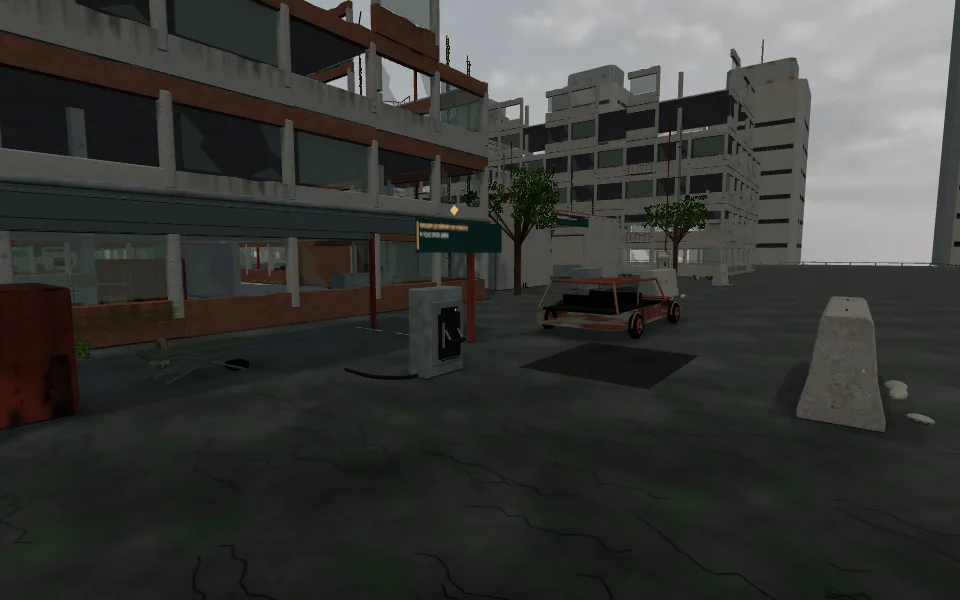
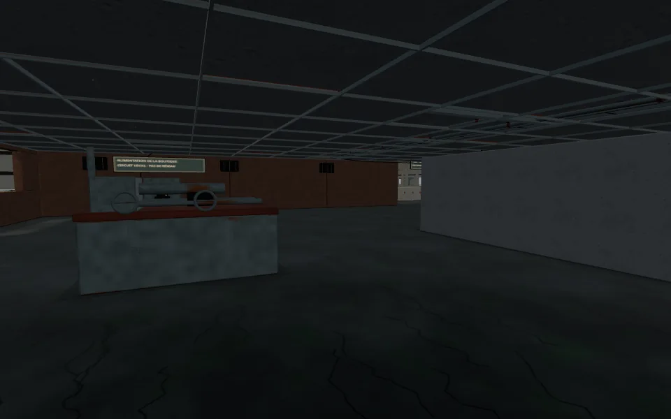
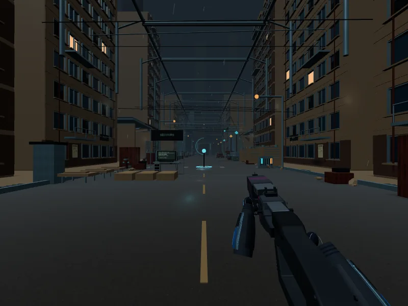

Les ombres prennent place.
DÉCORS · PERSONNAGES · INTÉRIEURSLes ombres projetées restent actives sur mobile et en mode compatible. Leur zone suit le joueur ; des contacts doux au sol relient les bâtiments, les machines et les objets à leur environnement.

Les surfaces physiques participent aux ombres. Les anciens aplats décalés sont retirés.

Toits et faux plafonds arrêtent la lumière directe. Les contacts restent lisibles sous les établis et les cloisons ; la lampe torche peut aussi projeter des ombres.

M02 utilise le même suivi d’ombres, avec son éclairage de nuit. Le système est aussi raccordé à l’arène et à AT HOME.
Captures réelles WebGL, prises dans le jeu. Le réglage limite la résolution et la fréquence des ombres pour les appareils mobiles. Le confort et la fluidité sur iPhone et Quest physiques restent à tester.